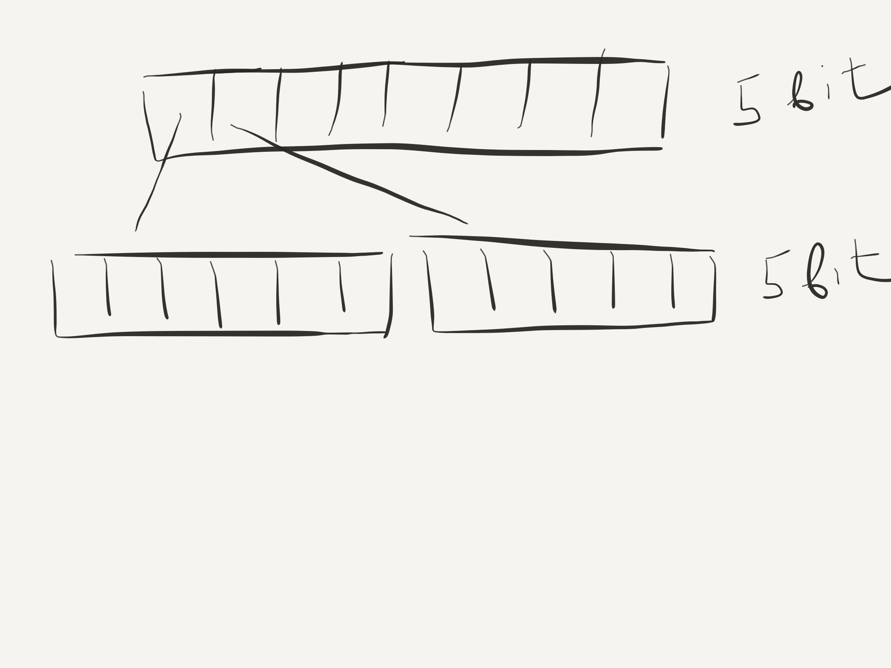
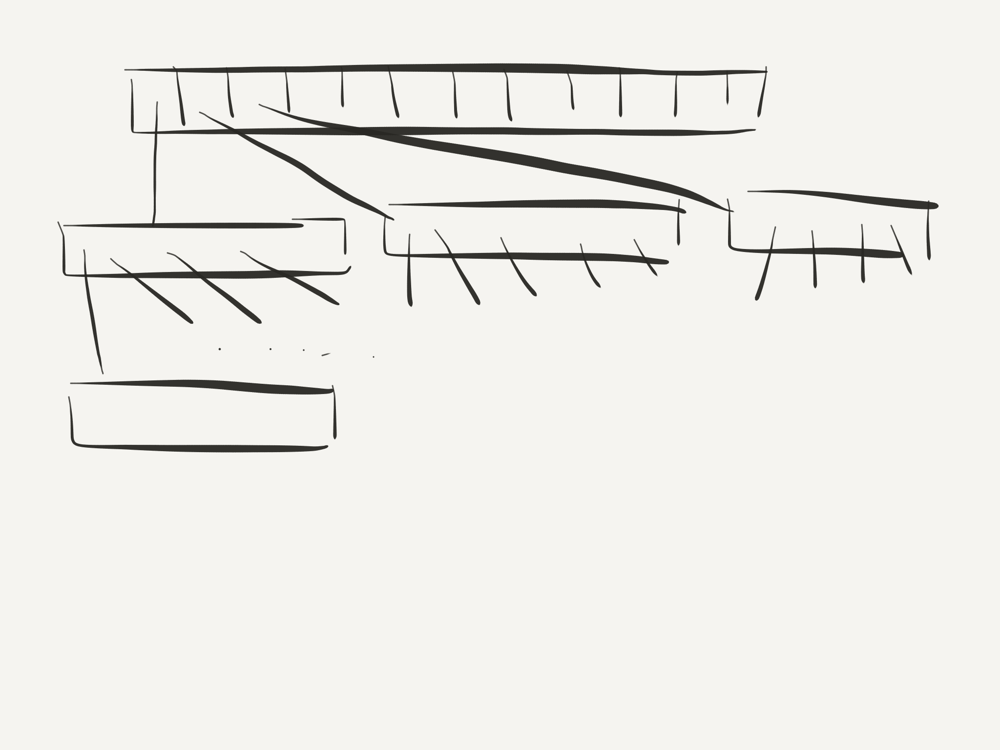
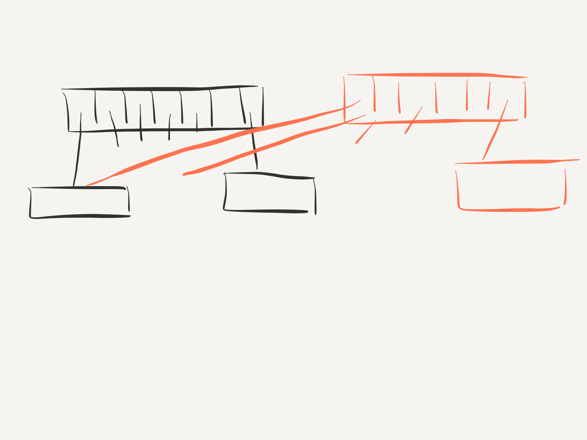
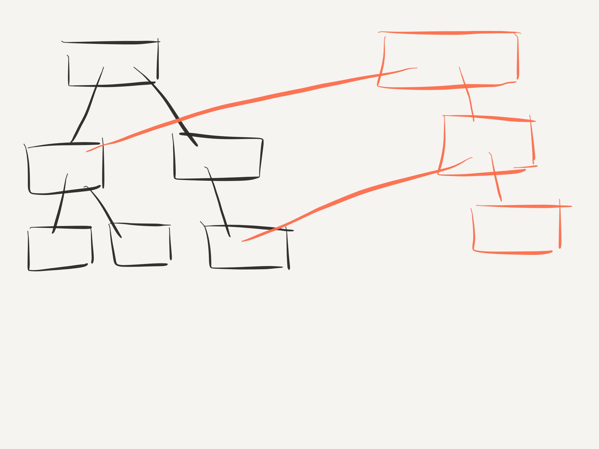

Страничка курса: https://maxcom.github.io/scala-course-2020/
Посмотрите на исследование производительность коллекций Scala: Benchmarking Scala Collections.
Vector - современная персистентная коллекция,
без этих недостатков.
Используется и в Scala, и в Clojure
До 32 элементов
До 1024 элементов (32*32) 
Очередной уровень 
Добавление элемента - два уровня 
Добавление элемента - три уровня 
Добавление в начало - аналогично;
Vector хранит смещение первого элемента
Стоимость операций - effectively constant:
Почему effectively constant?
Максимум 6 уровней, это достаточно
Vector - не List:
для пользователя:
Map("one" -> "first", "two" -> "second", "three" -> "third")
m.get("one") // Some("first")
val m1 = m + ("five" -> "fifth") // добавление
val m2 = m - "one" // удаление
map/flatMap/filter/fold - аналогично
Seq[(K,V)]
m.map(p ⇒ p._1.toUpperCase -> p._2)
В Scala эти операции не меняют тип исходной коллекции
Map - еще и частично определенная функция:
val m = Map("one" -> 1, "two" -> 2)
List("one", "two", "three").collect(m)
// List(1, 2)
Ключ - неизменяемый объект любого типа
Метод hashCode возвращает Int для любого объекта
Реализация в Scala 2.12 -
префиксное дерево с основанием 32
Похоже на вектор, только индексом
выступает hashCode
Структура разряженная, на каждом уровне могут быть и данные, и ссылки на подуровни.
(картинка с слайда про Vector)
Добавление и удаление -
effectively constant, как у Vector.
Поиск - effectively constant,
если хеш-функция хорошая.
Значения с одинаковым
хеш-кодом хранятся в списке.
Откладываем вычисления до момента
когда нужен результат
Параметры функции могут:
Пример: Option.getOrElse
// реализация из Scala 2.13.1
@inline final def getOrElse[B >: A](default: => B): B =
if (isEmpty) default else this.get
// пример
Option(v).getOrElse(throw new RuntimeException("Oops!"))
Значение вычисляется заново каждый раз
// метод List[A]
def fill[A](n: Int)(elem: => A): List[A]
Создает новый список с разными элементами
List.fill(10)(Random.nextInt)
такие вызовы похожи на передачу функции без аргументов
"Ленивые" значения - вычисляются один раз, результат сохраняется (memoization)
import java.time.{Duration, Instant}
lazy val lazyCurrent = Instant.now
val current = Instant.now
Thread.sleep(1000)
Duration.between(lazyCurrent, current)
// разница больше секунды
При отладке помним об "эффекте наблюдателя".
lazy работает и в классах, и внутри функций
Превращаем call by name в lazy:
def repeat(n: Int, v: => Int) {
lazy val cached = v // вычисляется 0 или 1 раз
List.fill(n)(cached)
}
Еще пример - регистронезависимый id
final case class UserId(id: String) {
private lazy val loId: String = id.toLowerCase()
override def equals(obj: Any) = {
obj match {
case other: UserId ⇒
other.loId == loId
case _ ⇒
false
}
}
override def hashCode() = loId.hashCode
}демо-код, с некоторыми "локалями" будут проблемы
Stream - старая реализация из 2.12 и ранее
LazyList - 2.13+, исправлены некоторые недостатки
Структура похожа на List
val s: LazyList[Int] = 3 #:: 2 #:: 1 #:: LazyList.empty
У Stream два вида ячеек:
У LazyList аналогично, но реализация скрыта.
Cons ячека вычисляет "хвост" при обращении,
и сохраняет его. Только до следующего звена.
Функции тоже работают лениво, например map:
var n: Int = 0
val s: LazyList[Int] = LazyList.fill(100000) {
n += 1
Random.nextInt
}
println(n) // 0
s.map(_ * 2).take(1).toVector
println(n) // 1
Пример реализации map:
def map(s: Stream[Int], f: Int ⇒ Int): Stream[Int] = {
if (s.isEmpty) {
s
} else {
f(s.head) #:: map(s.tail, f)
}
}
для LazyList чуть сложнее
Функции, обходящие весь список "форсируют" его.
Например length или foldLeft.
Stream может быть бесконечным
Фибоначчи: каждое последующее число равно сумме двух предыдущих чисел
import scala.math.BigInt
val fibs: LazyList[BigInt] =
BigInt(0) #::
BigInt(1) #::
fibs.zip(fibs.tail).map { n =>
n._1 + n._2
}
fibs.take(5).toVector
Отличие Stream и LazyList:
Stream: первый элемент всегда вычислен,
LazyList - полностью ленивый.
Применение:
Пример: решение Судоку.
Пример: поиск кратчайшего решения "лабиринта".
Основное практическое применение:
Минусы:
Классификатор - алгоритм, относящий входные данные к одному из предопределенных классов.
Разработаем классификатор, определяющий является ли короткий текст позитивным, негативным или нейтральным.
На старте программы обучим классификатор на готовых текстах с оценками.
После на основе статистики будем оценивать произвольный текст.
Реализуем наивный байесовский классификатор
Денис Баженов: Наивный байесовский классификатор
В статье есть:
Для обучения классификатора используем готовый корпус:
Корпус коротких текстов для настройки классификатора
При использовании корпуса, просьба ссылаться на следующую работу: Автоматическое построение и анализ корпуса коротких текстов (постов микроблогов) для задачи разработки и тренировки тонового классификатора
Что делаем:
В примере реализации есть проблемы с производительностью!
Классификатор должен работать быстро,
максимум секунды.
«Монада — всего лишь моноид из категории эндофункторов, что может быть проще?»
(c) A Brief, Incomplete, and Mostly Wrong History of Programming Languages
К монадам можно придти двумя путями:
Для нас монада - шаблон проектирования.
Много типов из разных областей являются монадами.
Монада - значение, помещенное в контекст.
Операции:
Рассмотрим на примере Option
def findUserId(name: String): Option[Int] = ???
def loadUserById(id: Int): Option[User] = ???
val opt = Option("username") // создание
opt.flatMap(findUserId).flatMap(loadUserById)
Последовательное вычисление
пока не встретится None
for в Scala – не цикл
for { ... } yield { ... }
Комбинирует flatMap и map
(и еще filter, но это не для монад)
for без yield использует
forearch вместо последнего map
val jobTitle: Option[String] = for {
name <- opt // первая операция определяет тип
id <- findUserId(name)
user <- loadUserById(id)
} yield {
user.jobTitle
}
Посмотрите "desugar for" в IDEA
opt.flatMap(name =>
findUserId(name).flatMap(id =>
loadUserById(id).map(user =>
user.jobTitle)))
opt match {
case Some(name) ⇒
findUserId(name) match {
case Some(id) ⇒
loadUserById(id) match {
case Some(user) ⇒ user.jobTitle
case None ⇒ None
}
case None ⇒
None
}
case None ⇒
None
}Монада - абстракция цепочки связанных вычислений.
Монада контролирует выполнение этой цепочки.
Законы, которые должны выполнять монады
"Left Identity"
Для любой монадической функции f
pure(x).flatMap(f) == f(x)
применение функции к значению в монаде эквивалентно применению функции к значению
"Right Identity"
m.flatMap(pure) == m
применение функции создания не меняет монаду
ассоциативность
m.flatMap(f).flatMap(g) == m.flatMap(x => f(x).flatMap(g))
уравнивает разные способы комбинации функций
Try - тоже монада; вычисляется пока не возникнет исключение
Either - монада в Scala 2.12+. Вычисляется правая сторона, левая сторона - остановка вычисления.
Вычисления не обязательно должны происходить прямо сейчас и в текущем потоке.
Future - монада, выполняющая вычисление в другом потоке.
Рассмотрим её устройство на 5-й встрече.
Free - монада, свободная о какой-то реализации логики.
Собирает pipeline в структуру, которую потом можно передать в интерпретатор.
Разделяет бизнес-логику и её реализацию.
Рассмотрим Eval из Cats - монаду, выполняющую ленивые вычисления.
import cats.Eval
case class User(id: Int, info: String)
def loadUserById(id: Int): User = ???
// строим pipeline
val result = for {
v <- Eval.now(10)
user <- Eval.later(loadUserById(v))
} yield {
user.info
}
// вычисление происходит тут
result.valuedef merge(seq1: List[Int], seq2: List[Int]): Eval[List[Int]] = {
(seq1, seq2) match {
case (Nil, _) => Eval.now(seq2)
case (_, Nil) => Eval.now(seq1)
case (x::xs, y::ys) =>
if (x<y) {
Eval.Unit >> merge(xs,seq2).map(x +: _)
} else {
Eval.Unit >> merge(seq1,ys).map(y +: _)
}
}
}
merge(List.fill(10000)(0), List.fill(10000)(1)).valueНапоминаю: